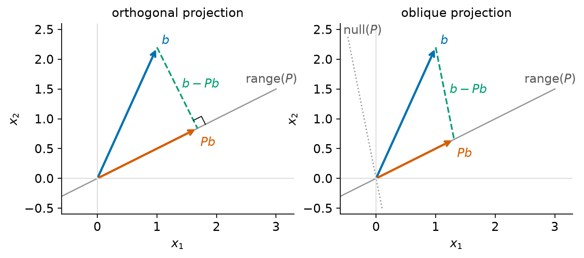
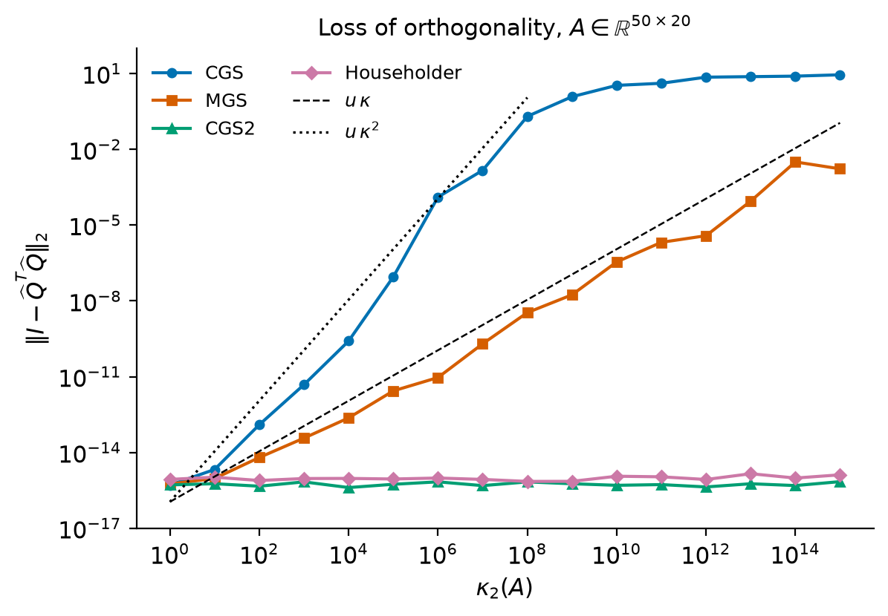
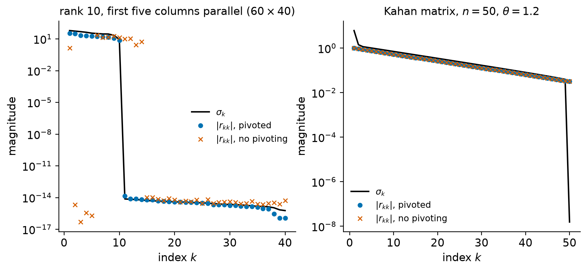

7. QR factorization#
Every matrix \(A\in\R^{m\times n}\) with \(m\ge n\) can be written as \(A = QR\), where \(Q\) is orthogonal and \(R\) is upper triangular. Read column by column, the factorization says that, when \(A\) has full column rank, the first \(j\) columns of \(A\) and the first \(j\) columns of \(Q\) span the same space, so \(Q\) supplies an orthonormal basis that is adapted to the columns of \(A\), and \(R\) records how to recover \(A\) from that basis. This is the factorization behind the stable solution of least-squares problems (Chapter 8), the QR algorithm for eigenvalues (Chapter 10), the orthogonalization steps of Krylov methods (Chapter 11) and the range finders of randomized algorithms (Chapter 12).
There are several ways to compute a QR factorization, and they are not equally good. Gram–Schmidt orthogonalization builds \(Q\) one column at a time and is the natural way to think about the factorization, but in floating-point arithmetic the columns it produces can lose their orthogonality, and how badly depends on the variant and on the condition number of \(A\). Householder triangularization builds \(R\) by applying reflectors and is backward stable, which is why it is the default in LAPACK. Givens rotations are the tool of choice when \(A\) has structure to preserve. Column pivoting adds the ability to detect numerical rank, with caveats. This chapter develops all of these, starting with the geometric object that underlies them: the projector.
Learning objectives
After working through this chapter you should be able to:
define projectors, orthogonal projectors and oblique projectors, prove their basic properties, and explain why \(QQ^T\) rather than \(A(A^TA)^{-1}A^T\) should be used to project numerically;
state and prove the existence of full and thin QR factorizations, and the uniqueness of the thin factorization with positive diagonal;
derive classical and modified Gram–Schmidt, count their cost, and state precisely how their loss of orthogonality depends on \(\kappa_2(A)\);
implement Householder QR with implicit storage of \(Q\), apply \(Q\) and \(Q^T\) without forming them, derive the cost \(2mn^2 - \tfrac23 n^3\), and state the backward stability theorem;
use Givens rotations for Hessenberg and updating problems, and explain what column pivoting does and does not reveal about rank;
use
numpy.linalg.qrandscipy.linalg.qrcorrectly, including the fact that LAPACK’sgeqrf, on which they are built, does not make the diagonal of \(R\) positive.
7.1. Projectors#
7.1.1. Projectors and complementary projectors#
The Gram–Schmidt process subtracts from each new vector its components in the directions already computed, and the least-squares problem asks for the point of a subspace that is closest to a given vector. Both are statements about projections.
Definition 7.1 (Projector)
A matrix \(P\in\R^{m\times m}\) is a projector if \(P^2 = P\). If in addition \(P^T = P\), it is an orthogonal projector. A projector that is not symmetric is called oblique. If \(P\) is a projector, \(I - P\) is its complementary projector.
A projector leaves every vector in its range unchanged: if \(v = Px\) then \(Pv = P^2x = Px = v\). The word “orthogonal” in “orthogonal projector” refers to the geometry of the projection, not to the matrix: apart from \(P = I\), an orthogonal projector is singular and is not an orthogonal matrix.
Theorem 7.1 (Range and null space of a projector)
Let \(P\in\R^{m\times m}\) be a projector. Then
\(I - P\) is a projector;
\(\range(I-P) = \nullsp(P)\) and \(\nullsp(I-P) = \range(P)\);
\(\range(P)\cap\nullsp(P) = \{0\}\), and every \(x\in\R^m\) can be written in exactly one way as \(x = x_1 + x_2\) with \(x_1\in\range(P)\) and \(x_2\in\nullsp(P)\), namely \(x_1 = Px\) and \(x_2 = (I-P)x\);
every eigenvalue of \(P\) is \(0\) or \(1\).
Conversely, if \(S_1\) and \(S_2\) are subspaces with \(S_1\cap S_2 = \{0\}\) and \(S_1 + S_2 = \R^m\), there is exactly one projector with range \(S_1\) and null space \(S_2\), called the projector onto \(S_1\) along \(S_2\).
Proof. (1) \((I-P)^2 = I - 2P + P^2 = I - P\). (2) If \(v = (I-P)x\) then \(Pv = Px - P^2x = 0\), so \(\range(I-P)\subseteq\nullsp(P)\). If \(Pv = 0\) then \(v = (I-P)v\), so \(\nullsp(P)\subseteq\range(I-P)\). Applying this to the projector \(I-P\), whose complementary projector is \(P\), gives the second identity. (3) If \(v\in\range(P)\cap\nullsp(P)\) then \(v = Pv = 0\). The decomposition \(x = Px + (I-P)x\) has the required form by (2), and if \(x = x_1 + x_2 = y_1 + y_2\) are two such decompositions then \(x_1 - y_1 = y_2 - x_2\) lies in both subspaces and is therefore zero. (4) If \(Px = \lambda x\) with \(x\neq0\) then \(\lambda x = P^2x = \lambda^2 x\), so \(\lambda^2 = \lambda\).
For the converse, every \(x\) has a unique decomposition \(x = s_1 + s_2\) with \(s_i\in S_i\) (uniqueness follows from \(S_1\cap S_2 = \{0\}\) as in (3)). Define \(Px = s_1\). This map is linear, \(P^2 = P\), its range is \(S_1\) and its null space is \(S_2\). Any projector with range \(S_1\) and null space \(S_2\) acts as the identity on \(S_1\) and as zero on \(S_2\), hence agrees with this \(P\) on all of \(\R^m = S_1 + S_2\).
7.1.2. Orthogonal projectors#
An orthogonal projector is one for which the two complementary subspaces are perpendicular. The next theorem gives three equivalent characterizations, the third of which explains why oblique projectors are dangerous numerically.
Theorem 7.2 (Characterizations of orthogonal projectors)
For a projector \(P\in\R^{m\times m}\) the following are equivalent:
\(P^T = P\);
\(\range(P)\perp\nullsp(P)\), that is, \(x^Ty = 0\) whenever \(x\in\range(P)\) and \(y\in\nullsp(P)\);
\(\|Px\|_2\le\|x\|_2\) for all \(x\), that is, \(\|P\|_2\le1\).
Proof. (1) \(\Rightarrow\) (2): if \(x = Pa\) and \(Py = 0\) then \(x^Ty = a^TP^Ty = a^TPy = 0\).
(2) \(\Rightarrow\) (1): for all \(x,y\), the vector \((I-P)y\) lies in \(\nullsp(P)\) by Theorem 7.1, so \(x^TP^T(I-P)y = (Px)^T(I-P)y = 0\). Hence \(P^T(I-P) = 0\), that is, \(P^T = P^TP\). The right-hand side is symmetric, so \(P^T = (P^TP)^T = P\).
(2) \(\Rightarrow\) (3): the decomposition \(x = Px + (I-P)x\) is orthogonal, so \(\|x\|_2^2 = \|Px\|_2^2 + \|(I-P)x\|_2^2\ge\|Px\|_2^2\).
(3) \(\Rightarrow\) (2): let \(x\in\range(P)\), \(y\in\nullsp(P)\) and \(t\in\R\). Then \(P(x+ty) = x\), so \(\|x\|_2^2\le\|x+ty\|_2^2 = \|x\|_2^2 + 2t\,x^Ty + t^2\|y\|_2^2\), that is, \(0\le 2t\,x^Ty + t^2\|y\|_2^2\) for every \(t\). If \(x^Ty\neq0\), a small \(t\) of sign opposite to \(x^Ty\) violates this inequality. Hence \(x^Ty = 0\).
In particular a nonzero projector has \(\|P\|_2\ge1\) (apply it to a vector in its range), with equality exactly when it is orthogonal. An oblique projector can have a very large norm: \(P = \begin{bmatrix}1 & t\\ 0 & 0\end{bmatrix}\) is a projector for every \(t\), and \(\|P\|_2 = \sqrt{1+t^2}\) (Exercise 7.2). Projecting along a direction that is nearly parallel to the range amplifies vectors, and with them any errors they carry. Figure 7.1 shows the two situations.


Figure 7.1 Orthogonal projection (left) and oblique projection (right) of the same vector \(b\) onto the same line \(\range(P)\). In both cases \(b - Pb\) lies in \(\nullsp(P)\); only in the orthogonal case is it perpendicular to the range, and only then is \(Pb\) the point of \(\range(P)\) closest to \(b\).#
7.1.3. Projectors built from orthonormal bases#
Theorem 7.3 (Orthogonal projector onto a subspace)
Let \(Q\in\R^{m\times n}\) have orthonormal columns and let \(S = \range(Q)\).
\(P = QQ^T\) is the orthogonal projector onto \(S\), and \(I - QQ^T\) is the orthogonal projector onto \(S^\perp\).
For every \(b\in\R^m\), \(Pb\) is the unique point of \(S\) closest to \(b\): \(\|b - Pb\|_2 < \|b - y\|_2\) for all \(y\in S\) with \(y\neq Pb\).
Every orthogonal projector with range \(S\) equals \(QQ^T\). In particular \(QQ^T\) does not depend on which orthonormal basis of \(S\) is used.
Proof. (1) \(P^2 = Q(Q^TQ)Q^T = QQ^T\) and \(P^T = P\). Clearly \(\range(P)\subseteq S\), and \(PQ = Q\) shows \(S\subseteq\range(P)\). The complementary projector \(I-P\) is symmetric, and its range is \(\nullsp(P)\), which is \(S^\perp\) because \(Q^Tx = 0\) exactly when \(x\perp S\) (and \(QQ^Tx = 0\) implies \(Q^Tx = Q^TQQ^Tx = 0\)).
(2) For \(y\in S\) write \(b - y = (b - Pb) + (Pb - y)\). The first term lies in \(S^\perp\) and the second in \(S\), so \(\|b-y\|_2^2 = \|b-Pb\|_2^2 + \|Pb-y\|_2^2\), which exceeds \(\|b - Pb\|_2^2\) unless \(y = Pb\).
(3) Let \(\tilde P\) be an orthogonal projector with range \(S\). It is the identity on \(S\), and by Theorem 7.2 its null space is orthogonal to \(S\); since \(\dim\nullsp(\tilde P) = m - n\), the null space is \(S^\perp\). So \(\tilde P\) and \(QQ^T\) agree on \(S\) and on \(S^\perp\), hence everywhere.
The special case \(n = 1\) is worth remembering: for a unit vector \(q\), the rank-one matrix \(qq^T\) projects onto the line through \(q\) and the matrix \(I - qq^T\) removes the component along \(q\). Gram–Schmidt is a sequence of applications of such matrices.
If the subspace is given by a basis that is not orthonormal, the projector can be written in terms of that basis.
Proposition 7.1 (Projector in terms of a general basis)
If \(A\in\R^{m\times n}\) has full column rank, the orthogonal projector onto \(\range(A)\) is \(P = A(A^TA)^{-1}A^T\).
Proof. \(A^TA\) is symmetric positive definite because \(x^TA^TAx = \|Ax\|_2^2 > 0\) for \(x\neq0\), so the inverse exists and is symmetric. Then \(P^T = P\), \(P^2 = A(A^TA)^{-1}(A^TA)(A^TA)^{-1}A^T = P\), \(\range(P)\subseteq\range(A)\), and \(PA = A\) gives equality of the ranges. By Theorem 7.3 (3), \(P\) is the orthogonal projector onto \(\range(A)\).
Warning
The formula \(A(A^TA)^{-1}A^T\) is a statement of exact linear algebra, not a recipe. The matrix \(A^TA\) has condition number \(\kappa_2(A)^2\) (Chapter 2), so rounding errors in forming it and solving with it are amplified by \(\kappa_2(A)^2\), and the computed matrix is neither symmetric nor idempotent to working accuracy once \(\kappa_2(A)\) is large. Compute a thin QR factorization \(A = Q_1R_1\) instead (Theorem 7.5) and use \(P = Q_1Q_1^T\). Even better, never form \(P\): the product \(Pb = Q_1(Q_1^Tb)\) costs about \(4mn\) flops, whereas forming \(P\) costs \(\bigO(m^2n)\) flops and \(m^2\) words of storage. The lab measures \(\|\widehat P^2 - \widehat P\|_2\) for both formulas; for the normal-equations formula it grows like \(u\,\kappa_2(A)^2\), while for \(Q_1Q_1^T\) it stays of order \(u\).
Proposition 7.2 (Oblique projectors from two bases)
Let \(A, B\in\R^{m\times n}\) have full column rank and suppose \(B^TA\) is nonsingular. Then \(P = A(B^TA)^{-1}B^T\) is the projector onto \(\range(A)\) along \(\range(B)^\perp\).
The proof is Exercise 7.3. When \(B = A\) we recover Proposition 7.1. Oblique projectors appear in the analysis of Petrov–Galerkin methods such as the Krylov methods of Chapter 11, and their norms measure how far such methods are from optimal.
Example 7.1 (Projecting onto a line)
Let \(a = (1,2,2)^T\), so \(\|a\|_2 = 3\) and \(q = a/3\). The orthogonal projector onto \(\Span\{a\}\) is
For \(b = (3,0,0)^T\) we get \(Pb = q\,(q^Tb) = \tfrac13(1,2,2)^T\) and \(b - Pb = \tfrac13(8,-2,-2)^T\), which is orthogonal to \(a\) because \(8 - 4 - 4 = 0\). The distance from \(b\) to the line is \(\|b - Pb\|_2 = \tfrac13\sqrt{72} = 2\sqrt2\).
7.2. The QR factorization#
7.2.1. Full and thin factorizations#
Definition 7.2 (QR factorization)
Let \(A\in\R^{m\times n}\) with \(m\ge n\).
A full QR factorization is \(A = QR\) with \(Q\in\R^{m\times m}\) orthogonal and \(R\in\R^{m\times n}\) upper triangular, that is, \(r_{ij} = 0\) for \(i>j\); rows \(n+1,\dots,m\) of \(R\) are zero.
A thin (or reduced, or economy-size) QR factorization is \(A = Q_1R_1\) with \(Q_1\in\R^{m\times n}\) having orthonormal columns and \(R_1\in\R^{n\times n}\) upper triangular.
The two are related by partitioning:
The columns of \(Q_2\) multiply zero rows of \(R\), so they do not affect \(A\). If \(A\) has full column rank they form an orthonormal basis of \(\range(A)^\perp\), which is useful in least-squares problems (Chapter 8). In this chapter a hat denotes a computed quantity, as in \(\widehat Q\) and \(\widehat R\), not the thin factor.
Writing \(A = Q_1R_1\) column by column gives
so \(\Span\{a_1,\dots,a_j\}\subseteq\Span\{q_1,\dots,q_j\}\) for every \(j\), with equality when \(A\) has full column rank. The QR factorization is thus a statement about a nested sequence of subspaces.
For \(m<n\) the same ideas give \(A = Q\begin{bmatrix}R_1 & R_2\end{bmatrix}\) with \(Q\in\R^{m\times m}\) orthogonal and \(R_1\in\R^{m\times m}\) upper triangular. We concentrate on \(m\ge n\).
7.2.2. Existence#
Theorem 7.4 (Existence of the QR factorization)
Every \(A\in\R^{m\times n}\) with \(m\ge n\) has a full QR factorization, and hence a thin one. The orthogonal factor can be taken to be a product of \(n\) matrices, each of which is either the identity or a Householder reflector (embedded in the identity). No assumption on the rank of \(A\) is needed.
Proof. Induction on \(n\). Let \(x = a_1\in\R^m\) be the first column of \(A\). If \(x\) is a multiple of \(e_1\) (this includes \(x = 0\)), let \(H_1 = I\) and \(\alpha = x_1\). Otherwise Theorem 1.1 provides a reflector \(H_1\) with \(H_1x = \alpha e_1\), \(|\alpha| = \|x\|_2\). In both cases \(H_1\) is symmetric and orthogonal, and
If \(n = 1\) we are done with \(Q = H_1\) and \(R = \alpha e_1\). Otherwise \(m-1\ge n-1\ge1\), and by induction \(B = Q_BR_B\) with \(Q_B\) orthogonal and \(R_B\) upper triangular. Set
\(Q\) is orthogonal as a product of orthogonal matrices, \(R\) is upper triangular, and \(QR = H_1\begin{bmatrix}\alpha & w^T\\ 0 & Q_BR_B\end{bmatrix} = H_1(H_1A) = A\) because \(H_1^2 = I\). The thin factorization consists of the first \(n\) columns of \(Q\) and the first \(n\) rows of \(R\), by (7.1).
The proof is an algorithm: it is Householder triangularization, which we study in Section 7.4.
7.2.3. Uniqueness#
The factors are never unique without some normalization: if \(D\) is diagonal with entries \(\pm1\), then \(Q_1R_1 = (Q_1D)(DR_1)\) is another thin QR factorization. For matrices of full column rank this is the only freedom.
Theorem 7.5 (Uniqueness of the thin QR factorization)
Let \(A\in\R^{m\times n}\) have full column rank \(n\). Then \(A\) has exactly one thin QR factorization \(A = Q_1R_1\) in which every diagonal entry of \(R_1\) is positive. Every thin QR factorization of \(A\) has the form \((Q_1D)(DR_1)\) with \(D = \diag(\pm1)\).
Proof. Existence. By Theorem 7.4, \(A = Q_1R_1\) for some thin factors. Since \(Q_1\) has orthonormal columns, \(Ax = 0\) if and only if \(R_1x = 0\), so \(R_1\) is nonsingular and its diagonal entries are nonzero. With \(D = \diag(\sign(r_{11}),\dots,\sign(r_{nn}))\) we have \(D^2 = I\), and \(A = (Q_1D)(DR_1)\) is a thin QR factorization whose triangular factor has diagonal entries \(|r_{jj}|>0\).
Uniqueness. Suppose \(A = Q_1R_1 = Q_2R_2\) with both triangular factors having positive diagonals; both are nonsingular by the argument above. Let \(T = R_2R_1^{-1}\), which is upper triangular with positive diagonal. From \(Q_1 = Q_2T\) we get \(Q_2^TQ_1 = T\), and from \(Q_2 = Q_1T^{-1}\) we get \(Q_1^TQ_2 = T^{-1}\). Transposing the first identity gives \(Q_1^TQ_2 = T^T\), so \(T^{-1} = T^T\). The left side is upper triangular and the right side lower triangular, so \(T\) is diagonal, and \(T^2 = I\) with a positive diagonal forces \(T = I\). Hence \(R_1 = R_2\) and \(Q_1 = Q_2\).
For the last statement, normalize an arbitrary thin factorization as in the existence part and apply uniqueness.
If \(A\) is rank deficient, uniqueness fails in a more serious way. For \(A = \begin{bmatrix}1&1\\0&0\\0&0\end{bmatrix}\), any unit vector \(q_2\) orthogonal to \(e_1\) gives a thin factorization \(A = [e_1, q_2]\begin{bmatrix}1&1\\0&0\end{bmatrix}\).
Corollary 7.1 (QR and Cholesky)
If \(A\) has full column rank and \(A = Q_1R_1\) with positive diagonal, then \(A^TA = R_1^TR_1\) is the Cholesky factorization of \(A^TA\) (Chapter 6), and \(A\) and \(R_1\) have the same singular values. In particular \(\kappa_2(R_1) = \kappa_2(A)\).
Proof. \(A^TA = R_1^TQ_1^TQ_1R_1 = R_1^TR_1\), and \(R_1^T\) is lower triangular with positive diagonal. The singular values of \(A\) are the square roots of the eigenvalues of \(A^TA = R_1^TR_1\), which are also those of \(R_1\).
The corollary shows that QR computes the Cholesky factor of \(A^TA\) without forming \(A^TA\). This is the reason why QR-based methods for least squares work with \(\kappa_2(A)\) rather than \(\kappa_2(A)^2\).
Check your understanding
Let \(A = Q_1R_1\) be a thin QR factorization of a matrix with full column rank. What is \(|r_{jj}|\) geometrically? Why does \(|r_{11}| = \|a_1\|_2\)?
Answer. By (7.2), \(r_{jj}q_j\) is the component of \(a_j\) orthogonal to \(\Span\{q_1,\dots,q_{j-1}\} = \Span\{a_1,\dots,a_{j-1}\}\), so \(|r_{jj}|\) is the distance from \(a_j\) to the span of the previous columns. For \(j = 1\) there are no previous columns and \(a_1 = r_{11}q_1\) with \(\|q_1\|_2 = 1\).
7.3. Gram–Schmidt orthogonalization#
7.3.1. Classical and modified Gram–Schmidt#
Assume \(A\) has full column rank. Solving (7.2) for \(q_j\) gives
and orthonormality of the \(q_i\) forces \(r_{ij} = q_i^Ta_j\) for \(i<j\). The vector on the right is \((I - Q_{j-1}Q_{j-1}^T)a_j\) with \(Q_{j-1} = [q_1,\dots,q_{j-1}]\): by Theorem 7.3 it is the orthogonal projection of \(a_j\) onto \(\Span\{q_1,\dots,q_{j-1}\}^\perp\), and \(r_{jj} > 0\) is its length. This is the Gram–Schmidt process, and it gives a second, constructive proof of the existence part of Theorem 7.5.
Algorithm 7.1 (Classical Gram–Schmidt (CGS))
Input: \(A = [a_1,\dots,a_n]\in\R^{m\times n}\) with full column rank.
Output: \(Q_1 = [q_1,\dots,q_n]\) with orthonormal columns and upper triangular \(R_1\) with \(A = Q_1R_1\).
For \(j = 1,\dots,n\):
\(r_{ij}\leftarrow q_i^Ta_j\) for \(i = 1,\dots,j-1\) (that is, \(r_{1:j-1,j}\leftarrow Q_{j-1}^Ta_j\)).
\(v\leftarrow a_j - \sum_{i=1}^{j-1} r_{ij}q_i\).
\(r_{jj}\leftarrow\|v\|_2\).
\(q_j\leftarrow v/r_{jj}\).
The modified algorithm subtracts the components one at a time and computes each coefficient from the partially reduced vector instead of from \(a_j\).
Algorithm 7.2 (Modified Gram–Schmidt (MGS))
Input: \(A = [a_1,\dots,a_n]\in\R^{m\times n}\) with full column rank.
Output: \(Q_1\) with orthonormal columns and upper triangular \(R_1\) with \(A = Q_1R_1\).
For \(j = 1,\dots,n\):
\(v\leftarrow a_j\).
For \(i = 1,\dots,j-1\):
\(r_{ij}\leftarrow q_i^Tv\).
\(v\leftarrow v - r_{ij}q_i\).
\(r_{jj}\leftarrow\|v\|_2\).
\(q_j\leftarrow v/r_{jj}\).
In exact arithmetic the two algorithms produce the same factors (Exercise 7.5): after \(i-1\) subtractions, \(v = a_j - \sum_{k<i}r_{kj}q_k\), and \(q_i^Tv = q_i^Ta_j\) because \(q_i\) is orthogonal to \(q_1,\dots,q_{i-1}\). MGS is often written in a “right-looking” form that, as soon as \(q_i\) is known, removes its component from all the remaining columns \(a_{i+1},\dots,a_n\). That form performs the same operations on each column in the same order, so it produces the same rounded results as Algorithm 7.2.
Proposition 7.3 (Cost of Gram–Schmidt)
CGS and MGS each require \(2mn^2\) flops to leading order.
Proof. For column \(j\), both algorithms compute \(j-1\) inner products of length \(m\) (\(2m-1\) flops each) and \(j-1\) vector updates \(v - r_{ij}q_i\) (\(2m\) flops each), then a norm and a scaling (\(3m\) flops, plus a square root). Summing \(4m(j-1) + \bigO(m)\) over \(j\) gives \(4m\cdot n(n-1)/2 + \bigO(mn) = 2mn^2 + \bigO(mn)\).
The flop counts agree, but the operations differ in kind. In CGS the coefficients of column \(j\) form one matrix-vector product \(Q_{j-1}^Ta_j\), and the update is a second one; these are level-2 BLAS operations and, on a parallel computer, require a fixed number of global reductions per column. In MGS each coefficient depends on the previous update, so the inner loop is a sequence of level-1 operations with \(j-1\) reductions. This is why CGS, in the reorthogonalized form below, is often preferred in practice despite the numerical weakness we now describe.
Example 7.2 (Gram–Schmidt on a \(3\times2\) matrix)
Let
Then \(r_{11} = \|a_1\|_2 = 5\) and \(q_1 = (0.6, 0.8, 0)^T\). Next \(r_{12} = q_1^Ta_2 = -3.6 - 6.4 = -10\) and \(v = a_2 - r_{12}q_1 = (-6+6, -8+8, 1)^T = (0,0,1)^T\), so \(r_{22} = 1\) and \(q_2 = e_3\). Hence
the unique thin factorization with positive diagonal. The second column of \(A\) is nearly parallel to the first: the distance of \(a_2\) from \(\Span\{a_1\}\) is \(r_{22} = 1\), while \(\|a_2\|_2 = \sqrt{101}\), so the two columns span lines at an angle of \(\arcsin(1/\sqrt{101})\approx5.7\) degrees. For two columns CGS and MGS perform identical operations.
7.3.2. Rounding errors and loss of orthogonality#
In floating-point arithmetic both variants compute factors whose product is close to \(A\).
Proposition 7.4 (Small residual)
The factors \(\widehat Q\), \(\widehat R\) computed by CGS or MGS satisfy \(A + \Delta A = \widehat Q\widehat R\) with \(\|\Delta a_j\|_2\le c(m,n)\,u\,\|a_j\|_2\) for every column \(j\), where \(c(m,n)\) is a modest polynomial in \(m\) and \(n\).
Proof. Sketch. The computed \(\widehat r_{jj}\widehat q_j\) equals the computed \(\widehat v\) up to a relative error \(\bigO(u)\), and \(\widehat v\) is the result of subtracting \(j-1\) multiples of computed vectors \(\widehat q_i\) of norm \(1 + \bigO(u)\) from \(a_j\). The rounding error model of Chapter 3 bounds the error in each such step by a multiple of \(u\) times \(\|a_j\|_2 + \sum_i|\widehat r_{ij}|\), and each \(|\widehat r_{ij}|\) is at most about \(\|a_j\|_2\). Rearranging \(\widehat r_{jj}\widehat q_j\approx a_j - \sum_{i<j}\widehat r_{ij}\widehat q_i\) gives the claim. For MGS a complete proof is in Higham [2002] (Chapter 19) and Björck [1967].
A small residual says nothing about the orthogonality of \(\widehat Q\), and it is here that the variants differ. The following results are stated with constants \(c_i = c_i(m,n)\) that are low-degree polynomials in the dimensions; their exact form is not needed.
Theorem 7.6 (Loss of orthogonality in Gram–Schmidt)
Let \(A\in\R^{m\times n}\) have full column rank and \(\kappa = \kappa_2(A)\), and let \(\widehat Q\) be computed in floating-point arithmetic with unit roundoff \(u\).
MGS [Björck, 1967, Björck and Paige, 1992]. If \(c_1u\kappa<1\), then \(\|I - \widehat Q^T\widehat Q\|_2\le\dfrac{c_2u\kappa}{1 - c_1u\kappa}\).
CGS [Giraud et al., 2005, Giraud et al., 2005]. If \(c_3u\kappa^2<1\), then \(\|I - \widehat Q^T\widehat Q\|_2\le\dfrac{c_4u\kappa^2}{1 - c_3u\kappa^2}\).
CGS with reorthogonalization (Algorithm 7.3) [Giraud et al., 2005]. If \(c_5u\kappa<1\), then \(\|I - \widehat Q^T\widehat Q\|_2\le c_6u\).
The hypotheses matter. Each bound is valid only when \(A\) is sufficiently far from rank deficiency, and the hypothesis for CGS, \(u\kappa^2\ll1\), is much stronger than the one for MGS. In double precision it fails once \(\kappa\) approaches \(u^{-1/2}\approx 10^8\), and beyond that point CGS can produce a \(\widehat Q\) whose columns are not even linearly independent in any useful sense. The bounds are also not just pessimistic worst cases: the growth rates \(u\kappa\) for MGS and \(u\kappa^2\) for CGS are observed on ordinary test matrices, as Figure 7.2 shows.


Figure 7.2 Loss of orthogonality \(\|I - \widehat Q^T\widehat Q\|_2\) for \(50\times20\)
matrices \(A = U\Sigma V^T\) with random orthonormal \(U\), \(V\) and singular
values logarithmically spaced between \(1\) and \(1/\kappa\). The dashed and
dotted lines are \(u\kappa\) and \(u\kappa^2\). Generated by
scripts/figures/ch07.py; the lab repeats the experiment.#
In this experiment, at \(\kappa = 10^8\) the computed values of \(\|I - \widehat Q^T\widehat Q\|_2\) are \(0.20\) for CGS and \(3.4\times10^{-9}\) for MGS; at \(\kappa = 10^{12}\) they are \(7.1\) for CGS and \(3.8\times10^{-6}\) for MGS. For CGS2 and for Householder QR the largest value over the whole range \(1\le\kappa\le10^{15}\) is \(7.0\times10^{-16}\) and \(1.4\times10^{-15}\). The residuals \(\|A - \widehat Q\widehat R\|_2/\|A\|_2\) of all four methods stay below \(10^{-15}\) throughout, as Proposition 7.4 predicts. A CGS value larger than \(1\) means that the positive semidefinite matrix \(\widehat Q^T\widehat Q\) has an eigenvalue larger than \(2\): orthogonality is completely lost.
Warning
It is sometimes said that CGS and MGS lose orthogonality at the same rate, proportional to \(u\kappa_2(A)\), with MGS merely having a smaller constant. That is false: the rates are different powers of \(\kappa\). At \(\kappa = 10^8\) the MGS bound \(u\kappa\approx10^{-8}\) is small while the CGS quantity \(u\kappa^2\approx 1\) is not, and the figure shows that CGS has lost all orthogonality there.
A heuristic explains where the factor \(\kappa\) comes from. When \(a_j\) is nearly a combination of \(a_1,\dots,a_{j-1}\), the vector \(v = a_j - \sum_{i<j} r_{ij}q_i\) is the result of heavy cancellation: its norm \(r_{jj}\) can be as small as about \(\sigma_n(A)\), while the rounding errors committed in forming it are of size \(u\|a_j\|_2\), up to about \(u\,\sigma_1(A)\). After normalization, \(q_j\) therefore carries relative errors of order \(u\,\sigma_1/\sigma_n = u\kappa\), and nothing prevents these errors from pointing along the earlier \(q_i\). In MGS this is essentially the whole story. In CGS the coefficients \(r_{ij} = \widehat q_i^Ta_j\) are computed with the original \(a_j\), so the errors already present in the earlier \(\widehat q_i\) are also copied into \(v\) and then magnified by the same cancellation, which is the origin of the second factor of \(\kappa\). The rigorous analysis, with references to the original proofs, is surveyed by Giraud et al. [2005].
Example 7.3 (Läuchli’s matrix)
Let \(\varepsilon = 10^{-8}\), so that \(\varepsilon^2 = 10^{-16} < u\) and \(\fl(1 + \varepsilon^2) = 1\), and
In floating-point arithmetic \(\widehat r_{11} = \fl(\sqrt{1+\varepsilon^2}) = 1\) and \(\widehat q_1 = (1,\varepsilon,0,0)^T\). Then \(\widehat r_{12} = 1\), \(v = (0,-\varepsilon,\varepsilon,0)^T\) and \(\widehat q_2 = (0,-1,1,0)^T/\sqrt2\), in both variants. For the third column, CGS computes \(\widehat r_{13} = \widehat q_1^Ta_3 = 1\) and \(\widehat r_{23} = \widehat q_2^Ta_3 = 0\), hence \(\widehat q_3 = (0,-1,0,1)^T/\sqrt2\) and \(\widehat q_2^T\widehat q_3 = 1/2\). MGS computes \(\widehat r_{23}\) from \(v = a_3 - \widehat q_1 = (0,-\varepsilon,0,\varepsilon)^T\), obtaining \(\widehat r_{23} = \varepsilon/\sqrt2\) and \(\widehat q_3 = (0,-1,-1,2)^T/\sqrt6\). Now \(\widehat q_2^T\widehat q_3\) is zero up to rounding errors of order \(u\), and the remaining inner products \(\widehat q_1^T\widehat q_2 = -\varepsilon/\sqrt2\approx-7.1\times10^{-9}\) and \(\widehat q_1^T\widehat q_3 = -\varepsilon/\sqrt6\approx-4.1\times10^{-9}\) are of the size \(u\kappa_2(A)\) that Theorem 7.6 allows. Both variants have the same small residual.
7.3.3. Reorthogonalization#
If one pass of Gram–Schmidt leaves an error of relative size \(u\kappa\) in the direction of the previous vectors, a second pass applied to the result removes it, provided \(u\kappa\) is small enough that the first pass has not destroyed the component orthogonal to the previous vectors. This is the maxim “twice is enough”, attributed to Kahan by Parlett [1998].
Algorithm 7.3 (Classical Gram–Schmidt with reorthogonalization (CGS2))
Input: \(A\in\R^{m\times n}\) with full column rank.
Output: \(Q_1\), \(R_1\) with \(A = Q_1R_1\).
For \(j = 1,\dots,n\):
\(v\leftarrow a_j\) and \(r_{1:j-1,j}\leftarrow0\).
Repeat twice:
\(s\leftarrow Q_{j-1}^Tv\).
\(v\leftarrow v - Q_{j-1}s\).
\(r_{1:j-1,j}\leftarrow r_{1:j-1,j} + s\).
\(r_{jj}\leftarrow\|v\|_2\) and \(q_j\leftarrow v/r_{jj}\).
CGS2 costs \(4mn^2\) flops, twice as much as CGS, but all of its work is in matrix-vector products. Theorem 7.6 (3) shows that it produces a \(\widehat Q\) that is orthogonal to working accuracy whenever \(u\kappa\) is small; in Figure 7.2 it stays at the level of \(u\) even beyond that hypothesis, which is an observation, not a guarantee. This is the orthogonalization used in many implementations of the Arnoldi process (Chapter 11).
7.4. Householder triangularization#
7.4.1. The algorithm#
Gram–Schmidt is triangular orthogonalization: it multiplies \(A\) on the right by triangular matrices until the columns are orthonormal. Householder’s method [Householder, 1958] is orthogonal triangularization: it multiplies \(A\) on the left by orthogonal matrices until the result is triangular,
Step \(k\) uses the reflector of Algorithm 1.1 for the vector \(x = A(k:m,k)\), embedded in the identity so that it acts only on rows \(k,\dots,m\). It zeros the entries below the diagonal in column \(k\) and does not disturb the zeros created in the earlier columns, because rows \(1,\dots,k-1\) are not touched and the entries of columns \(1,\dots,k-1\) in rows \(k,\dots,m\) are already zero. The schematic for a \(4\times3\) matrix, with \(\times\) marking entries that change, is
Algorithm 7.4 (Householder QR)
Input: \(A\in\R^{m\times n}\) with \(m\ge n\).
Output: \(A\) overwritten by \(R\) in its upper triangle and by the Householder vectors below the diagonal; scalars \(\beta_1,\dots,\beta_n\). The orthogonal factor is \(Q = H_1\cdots H_n\) with \(H_k = I - \beta_k v^{(k)}v^{(k)T}\) acting on rows \(k,\dots,m\).
For \(k = 1,\dots,n\):
\(x\leftarrow A(k:m,k)\). If \(x = 0\), set \(\beta_k\leftarrow0\) and continue with the next \(k\).
Compute \(v\in\R^{m-k+1}\) with \(v_1 = 1\), \(\beta_k\) and \(\alpha\) by Algorithm 1.1, with \(\sign(0) = 1\).
\(w^T\leftarrow v^TA(k:m,k+1:n)\).
\(A(k:m,k+1:n)\leftarrow A(k:m,k+1:n) - \beta_k v\,w^T\).
\(A(k,k)\leftarrow\alpha\) and \(A(k+1:m,k)\leftarrow v(2:m-k+1)\).
The last step sets column \(k\) directly to its known result \(\alpha e_1\) and stores
the essential part of \(v\) in the positions that have just become zero; the
leading entry \(v_1 = 1\) need not be stored. This implicit or factored
representation of \(Q\) uses no storage beyond \(A\) itself and the \(n\) numbers
\(\beta_k\). The sign convention \(\alpha = -\sign(x_1)\|x\|_2\) avoids
cancellation in \(v_1 = x_1 - \alpha\), as explained in
Chapter 1. The convention \(\sign(0) = 1\) matters: with
\(\sign(0) = 0\), which is what numpy.sign returns, the formula would give
\(\alpha = 0\) when \(x_1 = 0\), and then \(v = x\) has \(v_1 = 0\) and the reflector
maps \(x\) to \(-x\) instead of to a multiple of \(e_1\).
Proposition 7.5 (Cost of Householder QR)
Algorithm 7.4 requires \(2mn^2 - \tfrac23 n^3\) flops to leading order. For \(m = n\) this is \(\tfrac43n^3\), twice the cost of LU factorization; for \(m\gg n\) it is about \(2mn^2\), the same as Gram–Schmidt.
Proof. At step \(k\) the reflector acts on a block with \(p = m-k+1\) rows and \(q = n-k+1\) columns. (Counting the whole block, including column \(k\), only adds lower-order terms.) Forming \(w^T = v^TA(k:m,k:n)\) takes \(q\) inner products of length \(p\), about \(2pq\) flops. The rank-one update \(A - (\beta v)w^T\) takes \(pq\) multiplications and \(pq\) subtractions, another \(2pq\) flops, after \(\beta v\) has been formed with \(p\) multiplications. The Householder vector itself costs \(\bigO(p)\) flops. Step \(k\) therefore costs \(4(m-k+1)(n-k+1)\) flops to leading order, and with \(j = n-k+1\),
The leading terms are \(2mn^2 - 2n^3 + \tfrac43 n^3 = 2mn^2 - \tfrac23n^3\); the exact value of the sum is \(2mn^2 - \tfrac23n^3 + 2mn + \tfrac23n\).
Check your understanding
A classmate counts \(2(m-k+1)(n-k+1)\) flops for step \(k\) and sums to \(2mn^2 - \tfrac23n^3\). Where is the mistake?
Answer. Applying \(I - \beta vv^T\) to a \(p\times q\) block costs about \(4pq\) flops: \(2pq\) for \(w^T = v^TA\) and \(2pq\) for the rank-one update. With \(2pq\) per step the sum would be \(mn^2 - \tfrac13n^3\), half the correct total, so the stated result does not follow from the stated per-step count.
7.4.2. Working with the implicit \(Q\)#
Most applications need products with \(Q\) or \(Q^T\), not \(Q\) itself. By (7.3), \(Q^Tb = H_n\cdots H_1b\) and \(Qx = H_1\cdots H_nx\), and each reflector is applied in the form of Chapter 1, \(y\leftarrow y - \beta v(v^Ty)\).
Algorithm 7.5 (Applying \(Q^T\) and \(Q\) in factored form)
Input: Householder vectors \(v^{(k)}\) and scalars \(\beta_k\) from Algorithm 7.4; a vector \(b\in\R^m\) or \(x\in\R^m\).
Output: \(Q^Tb\) or \(Qx\), overwriting the input.
To form \(Q^Tb\): for \(k = 1,\dots,n\), set \(b(k:m)\leftarrow b(k:m) - \beta_kv^{(k)}\big(v^{(k)T}b(k:m)\big)\).
To form \(Qx\): for \(k = n,n-1,\dots,1\), set \(x(k:m)\leftarrow x(k:m) - \beta_kv^{(k)}\big(v^{(k)T}x(k:m)\big)\).
Each application costs \(\sum_k 4(m-k+1)\approx 4mn - 2n^2\) flops. A product with an explicitly stored \(m\times n\) matrix \(Q_1\) or \(Q_1^T\) costs \(2mn\) flops, so the factored form is at most twice as expensive, and it needs no extra storage and gives products with all of \(Q\), not only \(Q_1\). Applying \(Q^T\) to a matrix with \(p\) columns costs \(p\) times as much.
When \(Q_1\) is needed explicitly, for instance as an orthonormal basis of \(\range(A)\), it is formed by applying \(Q\) to the first \(n\) columns of the identity, \(Q_1 = H_1\cdots H_n\begin{bmatrix}I_n\\0\end{bmatrix}\), working from the right (backward accumulation). The matrix \(H_{k+1}\cdots H_n\begin{bmatrix}I_n\\0\end{bmatrix}\) agrees with the identity in its first \(k\) rows and columns, so \(H_k\) only needs to be applied to the block in rows \(k,\dots,m\) and columns \(k,\dots,n\). The cost is again \(\sum_k 4(m-k+1)(n-k+1)\approx 2mn^2 - \tfrac23n^3\) flops, and forming the full \(m\times m\) matrix \(Q\) costs about \(4(m^2n - mn^2 + \tfrac13n^3)\) flops (Exercise 7.7). So forming \(Q_1\) doubles the cost of the factorization, and forming \(Q\) when \(m\gg n\) is far more expensive than factoring \(A\).
Example 7.4 (Householder QR of the \(3\times2\) matrix)
Take \(A\) from Example 7.2. For \(x = (3,4,0)^T\) we have \(\alpha = -5\) and \(v = x - \alpha e_1 = (8,4,0)^T\), or \((1, 0.5, 0)^T\) after normalizing \(v_1 = 1\), with \(\beta = 2/(1 + 0.25) = 1.6\). The unnormalized \(v\) gives \(v^Tv = 80\) and \(v^Ta_2 = -80\), so \(H_1a_2 = a_2 - 2v\,(v^Ta_2)/(v^Tv) = a_2 + 2v = (10, 0, 1)^T\). Thus
At step 2, \(x = (0,1)^T\) has \(x_1 = 0\), so the convention \(\sign(0) = 1\) gives \(\alpha = -1\) and \(v = (1,1)^T\), \(\beta = 1\), and \(H_2x = (-1,0)^T\). The result is
This is the Gram–Schmidt factorization with \(D = \diag(-1,-1)\): the diagonal of \(R\) is negative because the sign convention makes \(r_{kk} = -\sign(x_1)\|x\|_2\). LAPACK uses the same convention and returns exactly these factors (Section 7.7).
7.4.3. Backward stability#
Theorem 7.7 (Backward stability of Householder QR)
Let \(\widehat R\in\R^{m\times n}\) be the upper trapezoidal factor computed by Householder QR of \(A\in\R^{m\times n}\), \(m\ge n\), in floating-point arithmetic with unit roundoff \(u\). There is an exactly orthogonal \(Q\in\R^{m\times m}\) such that
where \(\tilde\gamma_{mn} = cmnu/(1 - cmnu)\) with \(c\) a small integer constant [Higham, 2002] (Theorem 19.4). Moreover, the matrix \(\widehat Q_1\) formed explicitly by backward accumulation satisfies \(\|\widehat Q_1 - Q_1\|_F = \bigO(mn^{3/2}u)\), where \(Q_1\) consists of the first \(n\) columns of the same \(Q\), so \(\|I - \widehat Q_1^T\widehat Q_1\|_2 = \bigO(mn^{3/2}u)\) and \(\|A - \widehat Q_1\widehat R_1\|_F = \bigO(mn^{3/2}u)\|A\|_F\) [Higham, 2002] (Section 19.3).
The bound on \(\Delta A\) is columnwise: every column of \(A\) is perturbed by a small amount relative to its own norm, which is stronger than a normwise bound when the columns of \(A\) have very different sizes. None of the bounds involves \(\kappa_2(A)\), and this is the decisive difference from Gram–Schmidt (Figure 7.2). The dimension-dependent constants are worst-case bounds, and the observed errors are usually far smaller (Figure 7.2).
Warning
Backward stability is not the statement that “orthogonal transformations do not amplify errors” and therefore give accurate factors. The theorem says that \(\widehat R\) is the exact triangular factor of a slightly perturbed matrix. How far \(\widehat R\) and \(\widehat Q\) are from the exact factors of \(A\) itself depends on the conditioning of the QR factorization, which can be poor when \(A\) is ill conditioned; this is the familiar decomposition “forward error \(\lesssim\) condition number \(\times\) backward error” of Chapter 4. What backward stability does guarantee is that Householder QR never adds more error than a small perturbation of the data would, and that, for example, least-squares solutions computed from it are as accurate as the conditioning of the problem permits (Chapter 8).
MGS is weaker than Householder QR in its \(\widehat Q\) but not in its \(\widehat R\): Björck and Paige [1992] showed that MGS applied to \(A\) is numerically equivalent to Householder QR applied to the augmented matrix \(\begin{bmatrix}0_{n\times n}\\ A\end{bmatrix}\), and consequently the computed \(\widehat R\) of MGS is the exact triangular factor of a matrix \(A + \Delta A\) with columnwise small \(\Delta A\), just as for Householder QR. This is why MGS can be used for least-squares problems if it is applied correctly (Chapter 8).
LAPACK’s routine geqrf does not apply the reflectors one at a time. It
groups \(n_b\) consecutive reflectors into the compact WY form
\(H_1\cdots H_{n_b} = I - VTV^T\), with \(V\) the \(m\times n_b\) matrix of
Householder vectors and \(T\) an \(n_b\times n_b\) upper triangular matrix, and
applies the block with matrix-matrix products. The flop count is unchanged to
leading order, but most of the work now runs at level-3 BLAS speed
(Chapter 1) [Golub and Van Loan, 2013] (Sections 5.1 and 5.2).
7.5. Givens rotations#
A Givens rotation \(G\) (see Chapter 1) combines two rows \(i\) and \(j\) and can zero one chosen entry of the second [Givens, 1958]. A QR factorization can be built from \(mn - n(n+1)/2\) rotations, one per subdiagonal entry, for example column by column from the bottom up:
Algorithm 7.6 (Givens QR)
Input: \(A\in\R^{m\times n}\) with \(m\ge n\).
Output: \(A\) overwritten by \(R\); the rotations \((c,s)\) that define \(Q^T\).
For \(j = 1,\dots,n\):
For \(i = m, m-1,\dots,j+1\):
Compute \(c\), \(s\) with \(\begin{bmatrix}c&s\\-s&c\end{bmatrix}\begin{bmatrix}a_{i-1,j}\\ a_{ij}\end{bmatrix} = \begin{bmatrix}r\\0\end{bmatrix}\), using
hypotfor \(r\).Apply the rotation to rows \(i-1\) and \(i\) of \(A(:,j:n)\).
A rotation applied to two rows of length \(\ell\) costs \(6\ell\) flops, and column \(j\) needs \(m-j\) rotations of rows of length \(n-j+1\), so the total is \(\sum_j 6(m-j)(n-j+1)\approx3mn^2 - n^3\) flops, about \(1.5\) times the cost of Householder QR when \(m\gg n\). Givens QR is also backward stable [Higham, 2002] (Chapter 19). For dense matrices Householder QR is therefore preferred, but rotations win whenever most of the entries to be zeroed are already zero, because a rotation touches only two rows.
Hessenberg matrices. An upper Hessenberg matrix (\(h_{ij} = 0\) for \(i>j+1\)) has only \(n-1\) subdiagonal entries. Rotations \(G_1,\dots,G_{n-1}\), with \(G_k\) acting on rows \(k\) and \(k+1\), reduce it to triangular form at a cost of \(\sum_k 6(n-k+1)\approx3n^2\) flops instead of \(\bigO(n^3)\), and \(Q\) is stored as \(n-1\) pairs \((c_k,s_k)\). This is the core operation of the QR algorithm (Chapter 10) and of GMRES (Chapter 11).
Updating. If \(A = QR\) is known and a row \(w^T\) is appended to \(A\), then \(\begin{bmatrix}R\\ w^T\end{bmatrix}\) can be returned to triangular form with \(n\) rotations, each combining row \(k\) of \(R\) with the new row, for \(\bigO(n^2)\) flops (Exercise 7.8). Recomputing the factorization from scratch would cost \(\bigO(mn^2)\). Similar updates exist for deleting rows and for rank-one changes [Golub and Van Loan, 2013] (Section 6.5).
Sparse matrices. In a sparse matrix, a rotation creates fill only in the two rows it combines, and the order of the rotations can be chosen to limit fill-in; see Björck [1996] (Chapter 6) and Davis [2006].
Example 7.5 (One rotation)
For \(H = \begin{bmatrix}3&1\\4&2\end{bmatrix}\) take \(r = 5\), \(c = 3/5\) and \(s = 4/5\). Then
and \(\det R = 2 = \det H\), as it must be for a rotation, which has determinant \(1\).
7.6. Column pivoting and numerical rank#
7.6.1. The algorithm#
For a matrix of rank \(r<n\), the diagonal of \(R\) in an ordinary QR factorization need not show the rank: zero or tiny diagonal entries can appear anywhere, followed by large ones. Column pivoting reorders the columns so that the large diagonal entries come first. At step \(k\), before the Householder step, the column of the trailing block \(A(k:m,k:n)\) with the largest 2-norm is swapped into position \(k\). The result is
with \(P\) a permutation matrix. The trailing column norms need not be
recomputed at every step: because the reflector is orthogonal and leaves
rows \(1,\dots,k-1\) alone, the norm of column \(j\) over rows \(k+1,\dots,m\)
after step \(k\) is \((\|A(k:m,j)\|_2^2 - a_{kj}^2)^{1/2}\) with the updated
\(a_{kj}\). Updating costs \(\bigO(mn)\) flops in total; LAPACK’s geqp3
recomputes a norm when the update has lost too many digits to cancellation.
This algorithm is due to Businger and Golub; see Golub and Van Loan [2013]
(Section 5.4).
Theorem 7.8 (Properties of QR with column pivoting)
Let \(AP = QR\) be computed by column pivoting in exact arithmetic, and partition
Then
\(|r_{kk}|^2\ge\sum_{i=k}^{j} r_{ij}^2\) for all \(j\ge k\), and in particular \(|r_{11}|\ge|r_{22}|\ge\dots\ge|r_{nn}|\);
\(\sigma_k(R_{11})\le\sigma_k(A)\) and \(\sigma_{k+1}(A)\le\|R_{22}\|_2\);
if \(\rank(A) = r\), then \(r_{11},\dots,r_{rr}\) are nonzero and the trailing block \(R_{22}\) for \(k = r\) is zero, so the first \(r\) columns of \(AP\) form a basis of \(\range(A)\).
Proof. (1) Let \(B = [b_1,\dots,b_{n-k+1}]\) be the trailing block \(A(k:m,k:n)\) just before step \(k\), after the swap. Its first column has the largest norm, and the reflector maps it to \(\pm\|b_1\|_2e_1\), so \(|r_{kk}| = \|b_1\|_2\). The reflector of step \(k\) preserves the norm of every column of \(B\). The later steps, including their interchanges, act only on rows \(k+1,\dots,m\) and columns \(k+1,\dots,n\), preserve norms over rows \(k+1,\dots,m\), and do not change row \(k\). Hence, for \(j>k\), the column that ends in position \(j\) came from some column \(b_\ell\) of \(B\), and \(\sum_{i=k}^{j}r_{ij}^2\le\|b_\ell\|_2^2\le\|b_1\|_2^2 = r_{kk}^2\). Taking only the term \(i = j\) gives \(r_{jj}^2\le r_{kk}^2\).
(2) \(A\), \(AP\) and \(R\) have the same singular values because \(P\) and \(Q\) are orthogonal. By the Eckart–Young theorem (Chapter 2), \(\sigma_{k+1}(R) = \min\{\|R - X\|_2 : \rank(X)\le k\}\). The matrix \(X = \begin{bmatrix}R_{11}&R_{12}\\0&0\end{bmatrix}\) has rank at most \(k\) and \(\|R - X\|_2 = \|R_{22}\|_2\). For the other inequality, let \(X\) have rank at most \(k-1\) with \(\|R - X\|_2 = \sigma_k(R)\). Its leading \(k\times k\) block \(X_{11}\) has rank at most \(k-1\), and the norm of a submatrix is at most the norm of the matrix, so \(\sigma_k(R_{11})\le\|R_{11} - X_{11}\|_2\le\|R - X\|_2 = \sigma_k(R)\).
(3) If \(r_{kk} = 0\) while \(r_{11},\dots,r_{k-1,k-1}\neq0\), then the whole trailing block before step \(k\) is zero (its largest column norm is \(|r_{kk}|\)), so only the first \(k-1\) rows of \(R\) are nonzero and \(\rank(A) = \rank(R) = k-1\). Hence \(r_{kk}\neq0\) for \(k\le r\), and with \(k = r\) the block \(R_{11}\) is nonsingular. Block elimination shows \(\rank(R) = r + \rank(R_{22})\), so \(R_{22} = 0\). Then \(AP = Q_1\begin{bmatrix}R_{11} & R_{12}\end{bmatrix}\) with \(Q_1\) the first \(r\) columns of \(Q\), so \(\range(A)\subseteq\range(Q_1)\), while the first \(r\) columns of \(AP\) equal \(Q_1R_{11}\) and therefore span \(\range(Q_1)\).
In floating-point arithmetic, if \(A\) is close to a matrix of rank \(k\), one hopes that the computed \(R\) has a well-conditioned \(R_{11}\) and a small \(R_{22}\). By part (2), a small \(\|R_{22}\|_2\) certifies that \(\sigma_{k+1}(A)\) is small, and then \(A\) is within \(\|R_{22}\|_2\) of the rank-\(k\) matrix \(Q\begin{bmatrix}R_{11}&R_{12}\\0&0\end{bmatrix}P^T\). If in addition \(R_{11}\) is well conditioned, the first \(k\) columns of \(AP\) are a well-conditioned choice of \(k\) columns of \(A\). The left panel of Figure 7.3 shows this working: the matrix has rank \(10\) with its first five columns parallel, so the unpivoted \(R\) has tiny entries in positions \(2\) to \(5\) and large ones after them, while the pivoted \(|r_{kk}|\) follow the singular values and drop by fifteen orders of magnitude after \(k = 10\).


Figure 7.3 Diagonal of \(R\) with and without column pivoting compared with the singular values. Left: a \(60\times40\) matrix of rank \(10\) whose first five columns are parallel. Right: the \(50\times50\) Kahan matrix with \(\theta = 1.2\), on which column pivoting performs no interchanges and does not reveal the tiny smallest singular value.#
7.6.2. Limitations#
Column pivoting is a greedy heuristic, and it can fail. The classical counterexample is the Kahan matrix
see Higham [2002] (Chapter 8) and Golub and Van Loan [2013] (Chapter 5). Column \(j\) has squared norm \(s^{2(j-1)} + c^2\sum_{i=1}^{j-1}s^{2(i-1)} = s^{2(j-1)} + (1 - s^{2(j-1)}) = 1\), so all columns have unit norm. After a tiny perturbation that makes the earlier columns slightly longer (we add \(25\,\epsmach\,(n-k+1)\) to the \(k\)th diagonal entry), column pivoting performs no interchanges and returns \(R = K_n\) up to signs and terms of the size of the perturbation, so \(|r_{nn}|\approx s^{n-1}\) is not small. Yet \(K_n\) is nearly singular. For \(n = 50\) and \(\theta = 1.2\), the computed \(|r_{50,50}|\) is \(3.2\times10^{-2}\) while \(\sigma_{50}(K_{50}) = 1.6\times10^{-8}\) and \(\sigma_{49}(K_{50}) = 4.0\times10^{-2}\): the matrix has a clear gap after \(49\) singular values that the diagonal of \(R\) does not show (Figure 7.3, right). Algorithms with guaranteed bounds, called rank-revealing QR factorizations, exist but are more expensive [Björck, 1996] (Chapter 2); when reliability matters most, the SVD (Chapter 2) is the tool for numerical rank.
Warning
Column pivoting reveals rank in practice for most matrices, but “the number of diagonal entries of \(R\) above a tolerance” is an estimate of the numerical rank, not a theorem. By Theorem 7.8 (2) a small \(\|R_{22}\|_2\) does prove that \(\sigma_{k+1}(A)\) is small; the converse fails, as the Kahan matrix shows.
7.7. QR factorization in software#
7.7.1. LAPACK#
LAPACK [Anderson et al., 1999] provides the building blocks, named here without
the precision prefix (d for real double precision):
Routine |
Operation |
|---|---|
|
Householder QR in factored form: \(R\) in the upper triangle, Householder vectors below it, scalars |
|
form the first \(k\) columns of \(Q\) explicitly by backward accumulation |
|
apply \(Q\) or \(Q^T\) from the left or right without forming \(Q\) |
|
QR with column pivoting, \(AP = QR\) |
The Householder vectors produced by geqrf are those of
Algorithm 7.4: \(v_1 = 1\) is implicit and
\(\alpha = -\sign(x_1)\|x\|_2\). (One difference: when \(x_2,\dots,x_m\) are
already zero, LAPACK sets tau \(= 0\), so that \(H = I\) and the sign of \(x_1\)
is kept.) Consequently geqrf makes no attempt to produce a positive diagonal
of \(R\); LAPACK provides a separate routine, geqrfp, for that purpose, but
NumPy and SciPy call geqrf. The lab checks that a from-scratch implementation of
Algorithm 7.4 reproduces the factored output of geqrf
to rounding error.
7.7.2. NumPy and SciPy#
Call |
Returns |
|---|---|
|
thin factors \(Q_1\) (\(m\times n\)), \(R_1\) (\(n\times n\)) |
|
full factors \(Q\) (\(m\times m\)), \(R\) (\(m\times n\)) |
|
\(R_1\) only, without forming \(Q\) |
|
the factored form |
|
full factors by default ( |
|
thin factors |
|
|
|
a product with \(Q\) computed with |
Note the different defaults: NumPy returns thin factors, SciPy full ones.
The pivoting output p is an index vector, not a matrix. Forming the full
\(Q\) for a tall matrix costs \(\bigO(m^2n)\) flops and \(m^2\) words, which is
rarely what is wanted.
Warning
The diagonal of \(R\) returned by NumPy, SciPy or LAPACK can have entries of either sign. The uniqueness statement of Theorem 7.5 therefore does not apply to library output until the signs are normalized. To compare two QR factorizations, or to obtain the factorization with positive diagonal, set \(D = \diag(\sign(r_{11}),\dots,\sign(r_{nn}))\) with \(\sign(0) = 1\) and replace \(Q_1\leftarrow Q_1D\), \(R_1\leftarrow DR_1\):
d = np.where(np.diag(R) < 0, -1.0, 1.0)
Q, R = Q * d, d[:, None] * R
Comparing unnormalized factors from two different routines, or even from the same routine with a different LAPACK library, can suggest large differences where there are none.
7.7.3. Tall and skinny matrices#
Remark 7.1 (TSQR and CholeskyQR)
When \(m\gg n\), the cost of a QR factorization on modern hardware is dominated by data movement rather than by flops, and Householder QR, which sweeps over the whole matrix once per column (or per block of columns), moves much more data than necessary. TSQR splits \(A\) into row blocks \(A_1,\dots,A_p\), computes \(A_i = Q_iR_i\) independently, and then factors the stacked \(n\times n\) triangles \(\begin{bmatrix}R_1\\ \vdots\\ R_p\end{bmatrix}\), possibly recursively along a tree. Demmel et al. [2012] show that TSQR and its extension CAQR to general matrices minimize communication and are as numerically stable as Householder QR. CholeskyQR is even simpler: form \(G = A^TA\), compute its Cholesky factor \(R\) (Chapter 6) and set \(Q = AR^{-1}\). It needs one pass over \(A\) for \(G\) and one for \(Q\), both level-3 operations, but by forming \(A^TA\) it inherits the weakness of the normal equations: the Cholesky factorization can break down once \(u\kappa_2(A)^2\) is not small, and the computed \(Q\) loses orthogonality roughly like \(u\kappa_2(A)^2\). Repeating the procedure once on the computed \(Q\) (CholeskyQR2) restores orthogonality when \(\kappa_2(A)\) is moderate. The lab and Exercise 7.12 explore this behavior.
7.8. Computational laboratory#
The lab notebook for this chapter begins with projectors: it
builds \(QQ^T\) and \(A(A^TA)^{-1}A^T\) for matrices of increasing condition
number and shows that only the first remains symmetric and idempotent to
working accuracy. It then implements CGS, MGS, CGS2 and Householder QR from
scratch, the last with implicit storage of \(Q\), functions that apply \(Q\) and
\(Q^T\), and backward accumulation of \(Q_1\), and verifies them against NumPy and
SciPy after sign normalization and against the raw output of geqrf. It
reproduces Figure 7.2 together with the backward errors
\(\|A - \widehat Q\widehat R\|_2/\|A\|_2\), runs Läuchli’s example, and
compares observed run times of Householder QR with the prediction
\(2mn^2 - \tfrac23n^3\). Finally, it uses column pivoting to reveal the
numerical rank of a rank-deficient matrix, shows the failure on the Kahan
matrix, factors an upper Hessenberg matrix with \(n-1\) Givens rotations, and
tries CholeskyQR on a tall, skinny matrix.
7.9. Summary#
Projectors split space into two complementary subspaces; orthogonal projectors are the symmetric ones, have norm one, and give best approximations, and they are formed stably as \(QQ^T\) from an orthonormal basis, never from \(A(A^TA)^{-1}A^T\). Every matrix has a QR factorization, and a matrix of full column rank has exactly one thin factorization with positive diagonal, whose triangular factor is the Cholesky factor of \(A^TA\). Gram–Schmidt computes \(Q\) column by column for \(2mn^2\) flops; its computed \(Q\) loses orthogonality like \(u\kappa\) for MGS and \(u\kappa^2\) for CGS, and a single reorthogonalization (CGS2) restores it provided \(u\kappa\) is sufficiently small. Householder QR costs \(2mn^2 - \tfrac23n^3\) flops, stores \(Q\) implicitly in the space freed by the zeros it creates, and is backward stable with no dependence on \(\kappa\). Givens rotations exploit structure; column pivoting orders the columns so that the diagonal of \(R\) usually, but not always, reveals numerical rank. Library routines do not normalize the signs of \(\diag(R)\).
7.10. Further reading#
Trefethen and Bau [1997] cover projectors, QR, Gram–Schmidt and Householder triangularization in Lectures 6–10 and the stability of Householder QR in Lecture 16; they write \(\epsilon_{\text{machine}}\) for what we call \(u\). Golub and Van Loan [2013] treat Householder and Givens transformations, QR factorization, block (WY) representations and column pivoting in Chapter 5, and updating in Section 6.5. Higham [2002] gives the rounding error analysis of Householder, Givens and Gram–Schmidt QR in Chapter 19. Björck [1996] (Chapter 2) is the standard reference for Gram–Schmidt and rank-revealing factorizations in the context of least squares. The loss of orthogonality in MGS was analyzed by Björck [1967] and explained through the Householder connection by Björck and Paige [1992]; the \(u\kappa^2\) bound for CGS was proved by Giraud et al. [2005], and the results for CGS and CGS2 are surveyed by Giraud et al. [2005]. The original papers on reflectors and rotations are Householder [1958] and Givens [1958], and communication-avoiding QR is developed by Demmel et al. [2012].
7.11. Exercises#
Exercise 7.1 (Concept: recognizing projectors)
For each matrix decide whether it is a projector and, if so, whether it is orthogonal; for the projectors, give the range and the null space.
Solution to Exercise 7.1 (Concept: recognizing projectors)
\(P_1^2 = P_1 = P_1^T\): orthogonal projector onto \(\Span\{e_1\}\) along \(\Span\{e_2\}\). \(P_2^2 = P_2\) but \(P_2^T\neq P_2\): oblique projector with range \(\Span\{e_1\}\) and null space \(\Span\{(1,-1)^T\}\). \(P_3^2 = P_3 = P_3^T\): orthogonal projector onto \(\Span\{(1,1)^T\}\) with null space \(\Span\{(1,-1)^T\}\). \(P_4^2 = 0\neq P_4\): not a projector (it is nilpotent; its only eigenvalue is \(0\), yet it is not the zero projector). \(P_5^2 = I\ne P_5\): not a projector; it is a reflection, an orthogonal matrix with eigenvalues \(\pm1\).
Exercise 7.2 (Theory: norms and traces of projectors)
Let \(P\in\R^{m\times m}\) be a projector of rank \(r\). (a) Show that \(P\) is diagonalizable with eigenvalues \(1\) (\(r\) times) and \(0\) (\(m-r\) times), and deduce \(\trace(P) = \rank(P)\). (b) Show that \(\|P\|_2 = \sqrt{1+t^2}\) for \(P = \begin{bmatrix}1&t\\0&0\end{bmatrix}\). (c) Show that if \(P\neq0\) is oblique then \(\|P\|_2>1\).
Exercise 7.3 (Theory: oblique projectors)
Prove Proposition 7.2: if \(A,B\in\R^{m\times n}\) have full column rank and \(B^TA\) is nonsingular, then \(P = A(B^TA)^{-1}B^T\) is a projector with \(\range(P) = \range(A)\) and \(\nullsp(P) = \range(B)^\perp\). Show conversely that every projector of rank \(n\) can be written in this form.
Exercise 7.4 (Computation: Gram–Schmidt by hand)
Compute the thin QR factorization with positive diagonal of
by Gram–Schmidt, and check your answer by verifying \(|\det R| = |\det A|\).
Solution to Exercise 7.4 (Computation: Gram--Schmidt by hand)
\(r_{11} = \sqrt2\), \(q_1 = (1,1,0)^T/\sqrt2\). Then \(r_{12} = q_1^Ta_2 = 1/\sqrt2\) and \(a_2 - r_{12}q_1 = (\tfrac12,-\tfrac12,1)^T\), with norm \(r_{22} = \sqrt{3/2}\), so \(q_2 = (1,-1,2)^T/\sqrt6\). Next \(r_{13} = 1/\sqrt2\), \(r_{23} = q_2^Ta_3 = 1/\sqrt6\) and \(a_3 - r_{13}q_1 - r_{23}q_2 = (-\tfrac23,\tfrac23,\tfrac23)^T\), so \(r_{33} = 2/\sqrt3\) and \(q_3 = (-1,1,1)^T/\sqrt3\). Hence
\(\det R = \sqrt2\cdot\sqrt{3/2}\cdot2/\sqrt3 = 2\) and \(\det A = -2\), so \(\det Q = -1\), consistent with \(|\det Q| = 1\).
Exercise 7.5 (Theory: CGS and MGS in exact arithmetic)
Prove that in exact arithmetic Algorithm 7.1 and Algorithm 7.2 compute the same \(r_{ij}\) and \(q_j\). Then show that in floating-point arithmetic they perform exactly the same operations when \(n = 2\), and find the first step at which they can differ when \(n = 3\).
Solution to Exercise 7.5 (Theory: CGS and MGS in exact arithmetic)
Fix \(j\) and suppose (induction on \(j\)) that \(q_1,\dots,q_{j-1}\) are the same orthonormal vectors in both algorithms. In MGS, let \(v^{(i)}\) be the vector \(v\) just before the coefficient \(r_{ij}\) is computed. By induction on \(i\), \(v^{(i)} = a_j - \sum_{k<i} r_{kj}q_k\), where \(r_{kj}\) are the MGS coefficients. Then \(q_i^Tv^{(i)} = q_i^Ta_j - \sum_{k<i}r_{kj}q_i^Tq_k = q_i^Ta_j\), the CGS coefficient. So all coefficients agree, hence \(v\), \(r_{jj}\) and \(q_j\) agree.
For \(n = 2\) both algorithms compute \(r_{12} = \fl(q_1^Ta_2)\) with \(v = a_2\) and then \(\fl(a_2 - r_{12}q_1)\): the same operations. For \(n = 3\) the first difference is \(r_{23}\): CGS computes \(\fl(q_2^Ta_3)\), MGS computes \(\fl(q_2^T\fl(a_3 - r_{13}q_1))\). Läuchli’s example (Example 7.3) shows how different the results can be.
Exercise 7.6 (Computation: Householder QR by hand)
Apply Algorithm 7.4 by hand to
using \(\sign(0) = 1\). Give \(R\), the stored vectors \(v^{(1)}, v^{(2)}\) with
leading entry \(1\), and \(\beta_1,\beta_2\). Check \(R^TR = A^TA\), compare with
numpy.linalg.qr, and explain what would go wrong at step 1 if
\(\sign(0) = 0\) were used.
Exercise 7.7 (Theory: applying and forming \(Q\))
(a) Show that applying \(Q^T = H_n\cdots H_1\) to a vector with Algorithm 7.5 costs \(4mn - 2n^2\) flops to leading order. (b) Show that the matrix \(H_{k+1}\cdots H_n\begin{bmatrix}I_n\\0\end{bmatrix}\) agrees with the identity in its first \(k\) rows and columns, and deduce that backward accumulation of \(Q_1\) costs \(2mn^2 - \tfrac23n^3\) flops. (c) Show that forming the full \(Q\in\R^{m\times m}\) by backward accumulation costs \(4(m^2n - mn^2 + \tfrac13n^3)\) flops, and explain why forward accumulation, \(Q\leftarrow QH_k\) for \(k = 1,\dots,n\) starting from \(I\), is more expensive.
Exercise 7.8 (Theory: Givens rotations for Hessenberg matrices and updating)
(a) Show that the QR factorization of an upper Hessenberg \(H\in\R^{n\times n}\) by \(n-1\) Givens rotations costs \(3n^2\) flops to leading order, and that \(RQ\) is again upper Hessenberg. (b) Let \(A = QR\) with \(A\in\R^{m\times n}\) and let \(\tilde A = \begin{bmatrix}A\\ w^T\end{bmatrix}\). Show how to compute the \(R\) factor of \(\tilde A\) from \(R\) and \(w\) with \(n\) rotations and \(3n^2\) flops, and how to update \(Q\) if it is stored explicitly.
Exercise 7.9 (Theory: QR of rank-deficient matrices)
(a) Find all thin QR factorizations with \(r_{jj}\ge0\) of \(A = \begin{bmatrix}1&1\\0&0\\0&0\end{bmatrix}\), and show in general that if \(m>n\) and the last column \(a_n\) lies in the span of \(a_1,\dots,a_{n-1}\), then \(A\) has infinitely many thin QR factorizations with \(r_{jj}\ge0\). (b) Give a \(3\times3\) matrix of rank \(2\) whose unpivoted Householder QR has \(r_{22} = 0\) but \(r_{33}\neq0\). (c) Explain, using Theorem 7.8, why this cannot happen with column pivoting.
Exercise 7.10 (Theory: the diagonal of \(R\) and the singular values)
Let \(A\in\R^{n\times n}\) be nonsingular with QR factorization \(A = QR\) (any column ordering). Show that \(\sigma_n(A)\le|r_{kk}|\le\sigma_1(A)\) for every \(k\), and deduce \(\kappa_2(A)\ge\max_k|r_{kk}|/\min_k|r_{kk}|\). Is the lower bound on \(\kappa_2(A)\) sharp for the Kahan matrix?
Solution to Exercise 7.10 (Theory: the diagonal of \(R\) and the singular values)
\(R\) has the singular values of \(A\). For the upper bound, \(|r_{kk}|\le\|Re_k\|_2\le\|R\|_2 = \sigma_1\). For the lower bound, \(R^{-1}\) is upper triangular with diagonal entries \(1/r_{kk}\), so \(1/|r_{kk}| = |e_k^TR^{-1}e_k|\le\|R^{-1}\|_2 = 1/\sigma_n\). Dividing the two bounds gives the inequality for \(\kappa_2\). For the Kahan matrix of Section 7.6 with \(n = 50\), \(\theta = 1.2\), the ratio \(\max|r_{kk}|/\min|r_{kk}|\approx 1/(3.2\times10^{-2})\approx 31\), whereas \(\kappa_2(K_{50})\approx 6.1/(1.6\times10^{-8})\approx 4\times10^{8}\): the bound can be extremely weak.
Exercise 7.11 (Computation: the Kahan matrix)
Implement \(K_n(\theta)\) with the diagonal perturbation used in the notes.
(a) Verify that its columns have unit norm before the perturbation. (b) For
\(\theta = 1.2\) and \(n = 10, 20,\dots,60\), compute the pivoted QR factorization
with scipy.linalg.qr(K, pivoting=True), check that no interchanges occur,
and plot \(|r_{nn}|\), \(\sigma_{n-1}\) and \(\sigma_n\) against \(n\). (c) What
happens without the perturbation? Explain.
Exercise 7.12 (Computation: CholeskyQR and CholeskyQR2)
Implement CholeskyQR (Remark 7.1) for \(A\in\R^{10000\times20}\) with prescribed \(\kappa_2(A) = 10^j\), \(j = 0,1,\dots,9\). Plot \(\|I - \widehat Q^T\widehat Q\|_2\) for CholeskyQR, for CholeskyQR2 and for Householder QR. At which \(\kappa\) does the Cholesky factorization fail, and how does this compare with \(u^{-1/2}\)? Time the three methods and report the medians as observations on your machine.
Exercise 7.13 (Project: a one-level TSQR)
Implement TSQR with one level of reduction: split
\(A\in\R^{m\times n}\) into \(p\) row blocks, compute the thin QR of each block
with numpy.linalg.qr, and compute the thin QR of the stacked \(R\) factors.
Show how to assemble \(Q_1\) from the pieces. Verify that your \(R\) agrees with
the \(R\) of numpy.linalg.qr(A) after sign normalization, measure the loss of
orthogonality and the backward error as functions of \(\kappa_2(A)\), and
compare with Householder QR. Explain why the method is well suited to
parallel computers, citing Demmel et al. [2012].